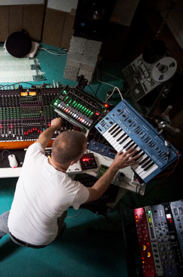

sebastian mullaert sebastian mullaert sebastian mullaert sebastian mullaert sebastian mullaert sebastian
mullaert sebastian mullaert sebastian mullaert sebastian mullaert sebastian mullaert sebastian mullaert
Audio-visual performancer
(about)
Musical artist, live performer, record producer & DJ
When you listen to Sebastian Mullaert’s music you will feel something enchanting, a resonance that
delivers
truth, integrity and reminds us to simply be.
As an artist thatis constantly evolving he has taken a bold new direction in his sonic exploration,
immersing himself in the modern-classical scene and joining forces with one of the top 10 philharmonic
orchestras in the world - Tonhalle Zürich.
Utterly unique
(Philosophy)
Convergence of Zen meditation, nature & creativity
The majesty of the natural world has always been integral to Sebastian Mullaert’s music.
His approach to art, as well as to life, is centered around meditating on nature’s primordial cycles and
forces.
Based on nature breath
“(True balance in itself) As human beings
we are created /
And the
creativity — is just
flowing through us. *
flourishing
And that’s creativity
Really feel this present moment
(Process)
The generation of a new modern-classical concept
My creative process isn`t the same all the time.
Maybe one could call in it the essence of the
change life. When this change of life is allowed,
then creativity begins, and when this happens
we are truly alive.
(Inspiration)
Creativity & life
are inseparable
Studio perception of music in process

Atmosphere and euphoria
“(To the present) To move to music connects you
to the moment /
What’s important — what’s meaningful
in life. People return to themselves *
You are just letting expression take place
(discography)
Musical recording
Really feel this present moment
The transformation in the natural world is forms
the emotional core of Natthall, a project that’s
so much more than a more album.
01 \Natthal
Bridge the gap between electronic and modern classical music.